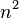
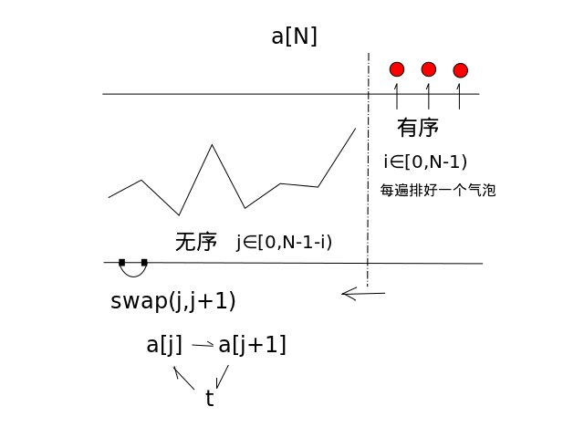

冒泡排序（英语：Bubble Sort，台湾另外一种译名为：泡沫排序）是一种简单的排序算法。它重复地走访过要排序的数列，一次比较两个元素，如果他们的顺序错误就把他们交换过来。走访数列的工作是重复地进行直到没有再需要交换，也就是说该数列已经排序完成。这个算法的名字由来是因为越小的元素会经由交换慢慢“浮”到数列的顶端。
冒泡排序对个项目需要O()的比较次数，且可以原地排序。尽管这个算法是最简单了解和实现的排序算法之一，但它对于少数元素之外的数列排序是很没有效率的。
冒泡排序是与插入排序拥有相等的运行时间，但是两种算法在需要的交换次数却很大地不同。在最好的情况，冒泡排序需要 次交换，而插入排序只要最多
次交换，而插入排序只要最多 交换。冒泡排序的实现（类似下面）通常会对已经排序好的数列拙劣地运行（
交换。冒泡排序的实现（类似下面）通常会对已经排序好的数列拙劣地运行（ ），而插入排序在这个例子只需要
），而插入排序在这个例子只需要 个运算。因此很多现代的算法教科书避免使用冒泡排序，而用插入排序取代之。冒泡排序如果能在内部循环第一次运行时，使用一个旗标来表示有无需要交换的可能，也可以把最好的复杂度降低到
个运算。因此很多现代的算法教科书避免使用冒泡排序，而用插入排序取代之。冒泡排序如果能在内部循环第一次运行时，使用一个旗标来表示有无需要交换的可能，也可以把最好的复杂度降低到 。在这个情况，已经排序好的数列就无交换的需要。若在每次走访数列时，把走访顺序反过来，也可以稍微地改进效率。有时候称为鸡尾酒排序，因为算法会从数列的一端到另一端之间穿梭往返。
。在这个情况，已经排序好的数列就无交换的需要。若在每次走访数列时，把走访顺序反过来，也可以稍微地改进效率。有时候称为鸡尾酒排序，因为算法会从数列的一端到另一端之间穿梭往返。
冒泡排序算法的运作如下：
- 比较相邻的元素。如果第一个比第二个大，就交换他们两个。
- 对每一对相邻元素作同样的工作，从开始第一对到结尾的最后一对。这步做完后，最后的元素会是最大的数。
- 针对所有的元素重复以上的步骤，除了最后一个。
- 持续每次对越来越少的元素重复上面的步骤，直到没有任何一对数字需要比较。
由于它的简洁，冒泡排序通常被用来对于程序设计入门的学生介绍算法的概念。
目录
[]
- 1 伪代码
- 2 助记码
- 3 实现技术
- 3.1 C语言实现(1)
- 3.2 C++语言实现
- 3.3 JAVA语言实现
- 3.4 Ruby实现
- 3.5 JavaScript实现
- 3.6 Pascal实现
- 4 使用指针的冒泡排序
- 4.1 C语言实现(2)
- 4.2 Python代码
- 5 C#语言实现
- 5.1 VB.NET语言示例
- 5.2 PHP语言代码
- 6 外部链接
伪代码[]
function bubblesort (A : list[0..n-1]) {
var i, j;
for i from 0 to n-2 {
for j from 0 to n-2-i {
if (A[j] > A[j+1])
swap(A[j], A[j+1])
}
}
}
助记码[]
i∈[0,N-1) //循环N-1遍
j∈[0,N-1-i) //每遍循环要处理的无序部分
swap(j,j+1) //两两排序（升序/降序）
i∈[N-1,0) //循环N-1遍
j∈[N-1,N-i-1) //每遍循环要处理的无序部分
swap(j,j-1) //两两排序（升序/降序）
i∈[0,N-1) //循环N-1遍
j∈[i+1,N) //每遍循环要处理的无序部分
swap(i,j) //两两排序（升序/降序）

实现技术[]
C语言实现(1)[]
标准C语言代码[]
#include <stdio.h>
void bubble_sort(int arr[], int len) {
int i, j, temp;
for (i = 0; i < len - 1; i++)
for (j = 0; j < len - 1 - i; j++)
if (arr[j] > arr[j + 1]) {
temp = arr[j];
arr[j] = arr[j + 1];
arr[j + 1] = temp;
}
}
int main() {
int arr[] = { 22, 34, 3, 32, 82, 55, 89, 50, 37, 5, 64, 35, 9, 70 };
int len = (int) sizeof(arr) / sizeof(*arr);
bubble_sort(arr, len);
int i;
for (i = 0; i < len; i++)
printf("%d ", arr[i]);
return 0;
}
C++语言实现[]
#include <iostream>
using namespace std;
template<typename T> //整數或浮點數皆可使用,若要使用物件(class)時必須設定大於(>)的運算子功能
void bubble_sort(T arr[], int len) {
int i, j;
T temp;
for (i = 0; i < len - 1; i++)
for (j = 0; j < len - 1 - i; j++)
if (arr[j] > arr[j + 1]) {
temp = arr[j];
arr[j] = arr[j + 1];
arr[j + 1] = temp;
}
}
int main() {
int arr[] = { 61, 17, 29, 22, 34, 60, 72, 21, 50, 1, 62 };
int len = (int) sizeof(arr) / sizeof(*arr);
bubble_sort(arr, len);
for (int i = 0; i < len; i++)
cout << arr[i] << ' ';
cout << endl;
float arrf[] = { 17.5, 19.1, 0.6, 1.9, 10.5, 12.4, 3.8, 19.7, 1.5, 25.4, 28.6, 4.4, 23.8, 5.4 };
len = (int) sizeof(arrf) / sizeof(*arrf);
bubble_sort(arrf, len);
for (int i = 0; i < len; i++)
cout << arrf[i] << ' ';
return 0;
}
JAVA语言实现[]
public class BubbleSort {
public static void main(String[] args) {
int[] number = {95,45,15,78,84,51,24,12};
int temp = 0;
for (int i = 0; i < number.length - 1; i++)
for (int j = 0; j < number.length - 1 - i ; j++)
if (number[j] > number[j + 1]) {
temp = number[j];
number[j] = number[j + 1];
number[j + 1] = temp;
} //if end
for(int i = 0; i < number.length; i++)
System.out.print(number[i] + " ");
System.out.println();
} //main end
} //BubbleSort end
Ruby实现[]
def bubbleSort(array)
return array if array.size <2
(array.size-2).downto(0) do |i|
(0..i).each do |j|
array[j],array[j+1]=array[j+1],array[j] if array[j]>=array[j+1]
end
end
return array
end
JavaScript实现[]
function bubbleSort(arr){
var i=arr.length, j;
var tempExchangVal;
while(i>0){
for(j=0;j<i-1;j++){
if(arr[j]>arr[j+1]){
tempExchangVal = arr[j];
arr[j]=arr[j+1];
arr[j+1]=tempExchangVal;
}
}
i--;
}
return arr;
}
var arr = [3,2,4,9,1,5,7,6,8];
var arrSorted = bubbleSort(arr);
console.log(arrSorted);
alert(arrSorted);
控制台将输出：[1, 2, 3, 4, 5, 6, 7, 8, 9]
并且弹窗：
Pascal实现[]
输入：（在程序同目录下的文本文件：input.txt）
一行：等待排序的数（用空格隔开）；
实例：194 638 124 482 469 245 852 294 484 243 623
输出：（在程序同目录下的文本文件：output.txt）
一行：已经排好的数（从小到大）；
实例：124 194 243 245 294 469 482 484 623 638 852
procedure swap(j:longint); //交換過程
begin
a[j]:=a[j] xor a[j+1];
a[j+1]:=a[j] xor a[j+1];
a[j]:=a[j] xor a[j+1];
end;
procedure bubble_sort; //排序過程
var
i,j:longint;
flag:boolean; //flag標誌：若一次排序未發現數據交換，則說明數據已經有序，可以結束排序過程
begin
for i:=n-1 downto 1 do begin
flag:=true;
for j:=1 to i do begin
if a[j]>a[j+1] then begin
swap(j);
flag:=false;
end;
end;
if flag then exit;
end;
end;
使用指针的冒泡排序[]
#include <iostream>
using namespace std;
void bubble_sort(int d[], int size)
{
//#假定兩兩交換發生在數組最後的兩個位置#%
int exchange = size - 1;
while(exchange)
{
//#記錄下發生資料交換的位置#%
int bound = exchange;
exchange = 0; //#假定本次比較沒有資料交換#%
for(int i = 0; i < bound; i++)
{
if (d[i] > d[i + 1])
{
//#交换#%
int t = d[i];
d[i] = d[i + 1];
d[i + 1] = t;
exchange = i;
}
}
}
}
int main (int argc, char * const argv[])
{
int a[] = {3, 5, 3, 6, 4, 7, 5, 7, 4};
bubble_sort(a, sizeof(a) / sizeof(*a));
//#輸出#%
for(int i = 0; i < sizeof(a) / sizeof(*a); i++)
cout << a[i] << ' ';
cout << endl;
return 0;
}
C语言实现(2)[]
typedef.h
#ifndef __TYPEDEF_H__
#define __TYPEDEF_H__
#include <stddef.h>
enum
{
RET_OK,
RET_FAIL
};
typedef int (*DataCompare)(int a, int b);
typedef int (*BubbleSort)(int arr[], size_t count, DataCompare cmp);
#ifdef __cplusplus
#define DECLS_BEGIN extern "C" {
#define DECLS_END }
#else
#define DECLS_BEGIN
#define DECLS_END
#endif/* __cplusplus */
#define DEBUG_PRINT(FORMAT, VALUE) printf("File %s line %d: "\
#VALUE " = " FORMAT "\n"\
,__FILE__, __LINE__,VALUE\
);
#define LENGTH(array) (sizeof(array)/sizeof(array[0]))
#define return_if_fail(p) if(!(p)) \
{printf("%s : %d Warning : "#p" failed.\n",\
__func__, __LINE__); return ;}
#define return_val_if_fail(p, ret) if(!(p))\
{printf("%s : %d Warning : "#p" failed.\n",\
__func__, __LINE__); return (ret);}
#endif/*__TYPEDEF_H__*/
bubble_sort.h
#ifndef __BUBBLE_SORT_H__
#define __BUBBLE_SORT_H__
#include "typedef.h"
DECLS_BEGIN
int cmp_int(int a, int b);
int cmp_int_invert(int a, int b);
int bubble_sort_1(int arr[], size_t count, DataCompare cmp);
int bubble_sort_2(int arr[], size_t count, DataCompare cmp);
int bubble_sort_3(int arr[], size_t count, DataCompare cmp);
int bubble_sort_4(int arr[], size_t count, DataCompare cmp);
int bubble_sort(BubbleSort sort, DataCompare cmp ,int arr[], size_t count);
DECLS_END
#endif
bubble_sort.c
#include <stdio.h>
#include <assert.h>
#include "bubble_sort.h"
#include "typedef.h"
#define DEBUG 0
int cmp_int(int a, int b)
{
return a - b;
}
int cmp_int_invert(int a, int b)
{
return b - a;
}
/*
冒泡排序(1)
i∈[N-1,0) //循環N-1遍
j∈[N-1,N-i-1) //每遍循環要處理的無序部分
swap(j,j-1) //两两排序(升序/降序)
*/
int bubble_sort_1(int arr[], size_t count, DataCompare cmp)
{
#if DEBUG
printf("bubble_sort_1:\n");
#endif
size_t i, j;
int temp;
if(count < 2)
{
return RET_OK;
}
for(i = count - 1; i > 0; i--)
{
for(j = count - 1; j > count - 1 - i; j--)
{
if(cmp(arr[j-1], arr[j]) > 0)
{
temp = arr[j];
arr[j] = arr[j-1];
arr[j-1] = temp;
}
}
}
return RET_OK;
}
/*
氣泡排序(2)
i∈[0,N-1) //循環N-1遍
j∈[0,N-1-i) //每遍循環要處理的無序部分
swap(j,j+1) //两两排序（升序/降序）
*/
int bubble_sort_2(int arr[], size_t count, DataCompare cmp)
{
#if DEBUG
printf("bubble_sort_2:\n");
#endif
size_t i, j;
int temp;
if(count < 2)
{
return RET_OK;
}
for(i = 0; i < count - 1; i++)
{
for(j = 0; j < count - 1 - i; j++)
{
if(cmp(arr[j], arr[j+1]) > 0)
{
temp = arr[j];
arr[j] = arr[j+1];
arr[j+1] = temp;
}
}
}
return RET_OK;
}
/*
氣泡排序(3)
i∈[0,N-1) //循環N-1遍
j∈[i+1, N) //每遍循環要處理的無序部分
swap(i,j) //两两排序（升序/降序）
*/
int bubble_sort_3(int arr[], size_t count, DataCompare cmp)
{
#if DEBUG
printf("bubble_sort_3:\n");
#endif
size_t i, j;
int temp;
if(count < 2)
{
return RET_OK;
}
for(i = 0; i < count-1; i++)
{
for(j = i+1; j < count; j++)
{
if(cmp(arr[i], arr[j]) > 0)
{
temp = arr[j];
arr[j] = arr[i];
arr[i] = temp;
}
}
}
return RET_OK;
}
/*
改進的氣泡排序
right∈[N-1, 0) //循環N-1遍
i∈[1, right) //每遍循環要處理的無序部分
max = i;
swap(max, right) //两两排序（升序/降序）
*/
int bubble_sort_4(int arr[], size_t count, DataCompare cmp)
{
#if DEBUG
printf("bubble_sort_4:\n");
#endif
size_t i = 0;
size_t max = 0;
size_t right = 0;
int temp;
if(count < 2)
{
return RET_OK;
}
for(right = count-1; right > 0; right --)
{
for(i = 1, max = 0; i < right; i++)
{
if(cmp(arr[i], arr[max]) > 0)
{
max = i;
}
}
if(cmp(arr[max], arr[right]) > 0)
{
temp = arr[max];
arr[max] = arr[right];
arr[right] = temp;
}
}
return RET_OK;
}
int bubble_sort(BubbleSort sort, DataCompare cmp, int arr[], size_t count)
{
#if DEBUG
DEBUG_PRINT("%d", count);
#endif
return_val_if_fail(cmp != NULL && sort != NULL ,RET_FAIL);
return sort(arr, count, cmp);
}
test.c
#include <stdio.h>
#include <assert.h>
#include "bubble_sort.h"
#define DEBUG 0
int main(int arc, char* const argv[])
{
size_t i = 0, n = 0;
int arr1[] = {5, 4, 1, 3, 6};
int arr2[] = {5, 4, 1, 3, 6, 10, 9, 8, 7, 2, 2};
int arr3[] = {5, 4, 1, 3, 6, 10, 2, 8, 7, 2, 7};
int arr4[] = {6, 1, 2, 3, 3, 10, 2, 9, 8, 2, 7};
//-1-
n = LENGTH(arr1);
#if DEBUG
DEBUG_PRINT("%d", n);
#endif
printf("Before sort:\n");
for(i = 0; i < n; i++)
printf("%4d", arr1[i]);
printf("\nAfter sort:\n");
bubble_sort(bubble_sort_1, cmp_int, arr1, n);
for(i = 0; i < n; i++)
printf("%4d", arr1[i]);
printf("\n");
//-2-
n = LENGTH(arr2);
#if DEBUG
DEBUG_PRINT("%d", n);
#endif
printf("Before sort:\n");
for(i = 0; i < n; i++)
printf("%4d", arr2[i]);
printf("\nAfter sort:\n");
bubble_sort(bubble_sort_2, cmp_int_invert, arr2, n);
for(i = 0; i < n; i++)
printf("%4d", arr2[i]);
printf("\n");
//-3-
n = LENGTH(arr3);
#if DEBUG
DEBUG_PRINT("%d", n);
#endif
printf("Before sort:\n");
for(i = 0; i < n; i++)
printf("%4d", arr3[i]);
printf("\nAfter sort:\n");
bubble_sort(bubble_sort_3, cmp_int, arr3, n);
for(i = 0; i < n; i++)
printf("%4d", arr3[i]);
printf("\n");
//-4-
n = LENGTH(arr4);
#if DEBUG
DEBUG_PRINT("%d", n);
#endif
printf("Before sort:\n");
for(i = 0; i < n; i++)
printf("%4d", arr4[i]);
printf("\nAfter sort:\n");
bubble_sort(bubble_sort_4, cmp_int_invert, arr4, n);
for(i = 0; i < n; i++)
printf("%4d", arr4[i]);
printf("\n");
return 0;
}
Makefile
src = test.c bubble_sort.c
target = test
temp = $(wildcard *~)
all:$(src)
gcc -g $^ -o $(target)
clean:
rm $(temp) $(target)
Python代码[]
def bubble(List):
for j in range(len(List)-1,0,-1):
for i in range(0,j):
if List[i]>List[i+1]:List[i],List[i+1]=List[i+1],List[i]
return List
示例：
testlist = [27, 33, 28, 4, 2, 26, 13, 35, 8, 14]
print('final:', bubble(testlist))
输出： final: ([2, 4, 8, 13, 14, 26, 27, 28, 33, 35])
C#语言实现[]
/// <summary>
/// 冒泡排序O(n^2)
/// </summary>
/// <param name="intArray">待排序数组</param>
static void BubbleSort(int[] intArray)
{
int temp = 0;//存储临时变量
for (int i = 0; i < intArray.Length; i++)
{
for (int j = i - 1; j >= 0; j--)
{
if (intArray[j + 1] < intArray[j])
{
temp = intArray[j + 1];
intArray[j + 1] = intArray[j];
intArray[j] = temp;
}
}
}
}
VB.NET语言示例[]
'泡沫排序由大到小的程式，預先產生一儲存亂數內容的陣列B，使用中斷點check，
switch 為自定兩數交換的sub
Dim i, j, count As Integer
For i = 0 To UBound(b) - 1
Dim check As Boolean = False '進入排序後設定一布林變數令其初值為false
For j = 0 To UBound(b) - 1 - i
If b(j) < b(j + 1) Then switch(b(j), b(j + 1))
check = True '進行檢查程序，若符合交換條件即進行兩數值交換(呼叫sub程序) 並於交換後
'將check的值變更為true(表示有進行交換動作，則此數列尚未呈現最終排列序)，
離開本層for迴圈後再度將check值重設成false
count += 1
Next
If check = False Then Exit For '檢查進入迴圈後是否進行過數值交換，若check值為false，
'則表示排序進行到此時所有數列的值已呈現期望中的順序，
因此尚未進行完的排序檢查動作可提早結束以提升效率。
Next
MsgBox("共經過了" & count & "次排序")
'泡沫排序由小到大的程式
Dim i, j, count As Integer
Dim check As Boolean
For i = 0 To UBound(b) - 1
check=false
For j = 0 To UBound(b) - 1 - i
If b(j) > b(j + 1) Then switch(b(j), b(j + 1))
count += 1
check = True
Next
If chk = False Then Exit For
Next
MsgBox("共經過了" & count & "次的排序")
'兩數值交換程式
Private Sub switch(ByRef a as integer, ByRef b as integer)
Dim c As Integer
c = a
a = b
b = c
End Sub
PHP语言代码[]
function bubble_sort($arr) {
$n=count($arr);
for($i=0;$i<$n-1;$i++){
for($j=0;$j<$n-1-$i;$j++) {
if($arr[$j]>$arr[$j+1]) {// j和j+1的比较
$temp=$arr[$j+1];
$arr[$j+1]=$arr[$j];
$arr[$j]=$temp;
}
}
}
return $arr;
}
示例：
$test = array(27, 33, 28, 4, 2, 26, 13, 35, 8, 14);
var_export(bubble_sort($test));
输出： final: array ( 0 => 2, 1 => 4, 2 => 8, 3 => 13, 4 => 14, 5 => 26, 6 => 27, 7 => 28, 8 => 33, 9 => 35, )